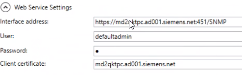

Connect to SNMP Web Service Interface
- Start SMC.
- In the SMC tree, select Certificate.
- The Certificates tab displays.
- Click Edit
 .
. - Set the SNMP default certificate as follows:
a. In the Default Certificates expander, click Browse.
b. In the Select Certificate dialog box, select the required host certificate, and click OK.
c. Click Save .
. - In the SMC tree, expand Websites.
- Locate and select the SNMP website WSI.
- The Management tab displays.
- In the Web Application Details expander, click Copy URL.
- In the Web Service Settings expander of the SNMP Configurator tool, connect to the web service interface as follows:
a. In the Interface address field, paste the URL previously copied.
b. Enter user name and password to configure the user credentials for the Desigo CC SNMP service to access the NORIS interface.
c. Click Browse, select the host certificate, and then click OK.
d. Click Connect.
NOTE: At any subsequent connection, you will be required the password only.

- The
Created views donestatus is displayed bottom left of the utility page.
The MIB configuration (if any) is retrieved and displayed in the configuration tool, and the fields are now editable. - The indicator in the status bar will stay gray if the configurator is empty, or data in the configurator were not yet saved (the SystemLocal.config was not yet created).
The indicator in the status bar will turn green if project data was previuosly saved and is aligned; otherwise, it will turn red (misalignment on WSI project).